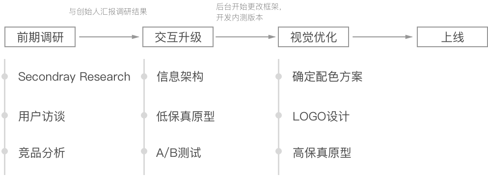

项目概述
AniTalker是一款高效的绘本/课文录制app，目标用户为语言类科任老师和家长。致力于提高老师的工作的效率和学生的学习成绩，并促进当地（新加坡）中小学和幼儿园教材电子化升级。
用户只需要通过几步简单的流程就能制作出简单的绘本视频、课文录音，用于学生/孩子的课后语言练习。 但由于app整体使用体验并不好，CEO希望我们能够对其进行交互上的优化。
目标
◦ 找出现有设计的问题，为AniTalker设计一套更符合需求的交互方案和界面。
挑战
◦ 设计小组的成员都不在同一个城市，交流都是通过网上语音，而且还要协调各地的时差。
◦ 对新加坡的情况并不了解。
我的角色
◦ 担任交互设计师，与小伙伴们一起做用户调研、交互设计，协助视觉设计。
◦ 担小组长，负责制定设计计划、组织开会、整理会议记录 。
项目流程
前期调研
新加坡背景调查、用户访谈、竞品分析
新加坡教育环境相关调查
对于都没在新加坡生活过的我们来说，对新加坡教育相关的背景信息都停留在刻板印象（stereotype）层面。
“听说Boss说他们上课都人手一个iPad🙃”
“话说···新加坡人到底讲什么语言啊？😅”
“都说他们教育很厉害，也不知道厉害在哪···🤔”
于是我们团队决定先对新加坡的教育、教学相关背景进行Secondary Research，这样有利于我们之后制定访谈提纲及发掘潜在用户。
通过对新加坡教育部官网、新加坡政府及Google上收集的相关资料发现：
用户访谈
为了更加深入地了解用户的需求和痛点，我们通过Skype对分别来自新加坡、中国、澳大利亚的6名老师进行了深度访谈。
本次访谈我们选择在Skype上进行，采取“一问一答"的形式，由团队中的其中一名小伙伴负责主持，依据访谈大纲灵活询问受访者问题，避免提引导性问题和封闭性问题，其余组员旁听和笔记摘录，并在访谈临近结束时补充遗漏问题。
*颜色越深表示需求越大
从图中我们可以明显看出：
●除了“录音”和“拍照”这两个基础功能需求外，用户的需求分成了压力导向型和兴趣导向型两种。
●压力导向型用户对文字编辑功能较为看重，但对角色及其他自定义功能需求不高。
●兴趣导向型用户希望app能制作出更有趣的视频，对角色、动作、音调的丰富性更为关注。
通过了解用户使用AniTalker的情况，我们得到的反馈如下图：
从图中我们可以看出：
●AniTalker目前的整体使用体验较差，并且表现在其各个关键功能节点上，对于主打的录音功能用户也并不满意，没有体现其价值。
●只设计一种界面来满足两类不同需求用户将会对两类用户都造成不必要的认知负担，降低使用效率。
●技术上的一些漏洞使得AniTalker使用体验更是雪上加霜。
综合以上调研，我们更新了用户的需求用户档案：
启示
通过对用户的深入访谈，我们对AniTalker现在所存在的问题也了解地越来越透彻，并总结了一下几点需要在优化中重点考虑的问题：
1、用户需求差异大； 2、核心功能（录音）不突出； 3、上手难度较大（认知成本高，交互不人性化）。
竞品分析
为了更清楚地了解我们的机会空间和竞争力，参考和学习竞品的优秀设计，所谓“知己知彼，百战百胜。”、“取人之长，补己之短”嘛～我们分别做了同类产品的竞品分析和跨界产品但相同功能的竞品分析。
❖ 同类型产品的竞品分析
结合AniTalker的现状和对以上7款教育工具类产品的分析，我们发现一些值得我们学习的地方：
简单易懂的新手指南
简单易懂的新手指南对于一款工具类的app可以说是必须具备的，它可以有效地减少用户尝试的次数，加快用户上手的时间。
高效的文件管理
实时保存、草稿箱、分类展示、关键词搜索等等都能有效提高用户的工作效率。
丰富的资源库
丰富的素材资源可以让用户快速获取自己想要的素材，再提高效率的同时也增加了趣味性。
便捷的作品分享
用户制作作品的最终目的是给学生／孩子看，提供便捷的第三方分享通道可以让用户更便捷地把作品分享出去。
❖ 跨界产品的竞品分析
针对相同功能上的跨界产品分析发现：
角色相关功能
参考app：
ChatterPix；Kid in Story Maker；Talking News
● 手指滑动实现“可动嘴巴"；
● 贴纸的添加增添了趣味性；
● 通过说话自动识别内容，匹配角色动作；
录音功能
参考app：
喜马拉雅FM
● 提供音频编辑功能；
文字编辑功能
参考app：
美图；iPhone自带Markup
● 提供更加丰富的样式选择，如：字体、字号、颜色；
● 提供文本对齐功能；
储存功能
参考app：
iCloud Drive；百度云
● 添加日期、名称、标签等排列方式，便于用户查找文件；
● 提供搜索功能；
● 提供快捷的分享功能；
SWOT分析
结合app自身情况和对两类竞品的分析得出：
交互升级
信息架构、低保真原型、AB测试
信息架构
通过以上的调研分析，我们确定了Redesign的核心点：◆提高用户效率；◆突出核心功能；◆降低上手难度。
由于中高年级老师和幼儿园及低年级老师的两种需求有较大差别，中高年级老师因为是给年龄较大、有学习压力的学生做的视频，以辅助学习为主，不需要调节音调和添加饰品等功能，低年级教师则相反，需要制作更有趣的视频来吸引小朋友的学习兴趣。我们将这两个种差别较大的需求分别设计成“Story"模式和“Speech"模式，针对这两种模式分别设计页面样式，这样就更有针对性，从而提高效率。
优化前：

优化后：

低保真原型
根据信息架构我们进行了一些大胆的尝试：
受到微信语音的启发，我们的核心功能“分段录音”采用了垂直展示“录音条”的方式：


流程图：

A/B测试
在一些细节设计的决定上，我们会使用“POP”原型制作app快速制作简易原型并找用户测试，选取最优方案。
淘汰
对于切换Secne这个高频操作而言，这种设计容易让用户误触到录音条， 还会阻碍用户对录音条的操作。
胜出
秉承设计风格（底边两个button），用户用起来更方便，误触问题也得到了解决。
视觉升级
确定配色方案、LOGO设计、高保真原型制作
确定配色方案
针对“高效”、“有趣”、“清新”等关键词，我们尝试了各种配色方案：
新logo和高保真界面还在设计中······
项目总结

*我们在Trello上管理项目进程

*CEO对我们的评价
少做无用功
1、先搞定信息架构和整体流程再扣交互细节
2、及时和程序沟通，了解技术可行性
合理“撕逼”
撕逼要有原则：
1、在核心功能的实现上，我们要尊重程序的意见，保证其稳定运行才是最关键的
2、在对用户集中吐槽的交互痛点的优化上，设计师要有足够的理由和自信说服程序
效率至上
1、用Trello及时更新工作状态、分配任务
2、高效开会：会前发布会议内容，及相关设计资料，会议上阐述需要重点关注的地方，搁置不重要的争执（比如交互细节，对于争论较长时间（超过30分钟）还达不成共识的点要暂时搁置）
其他项目：